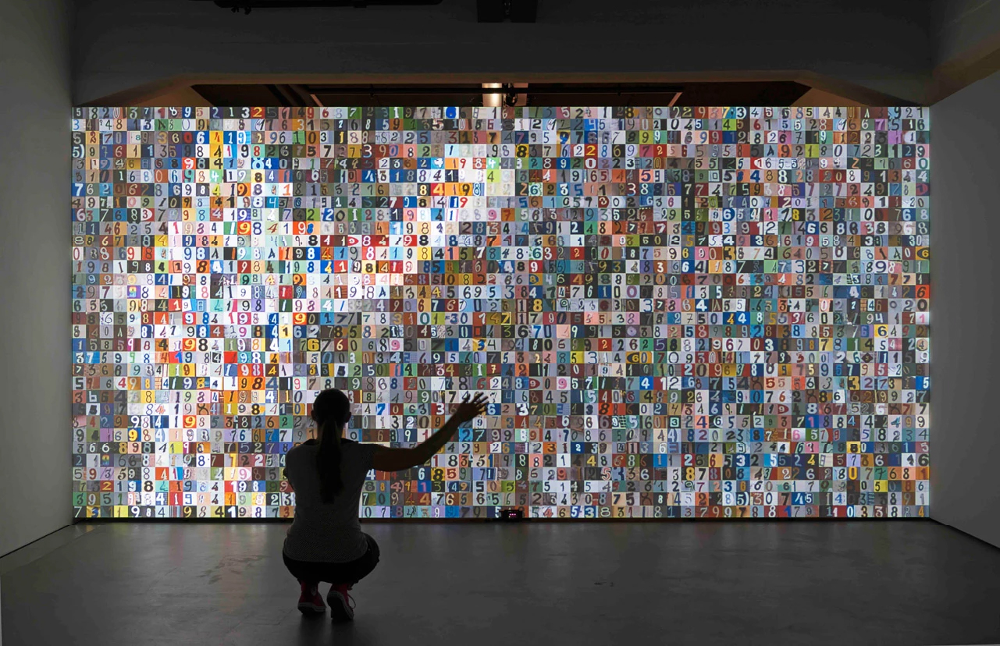
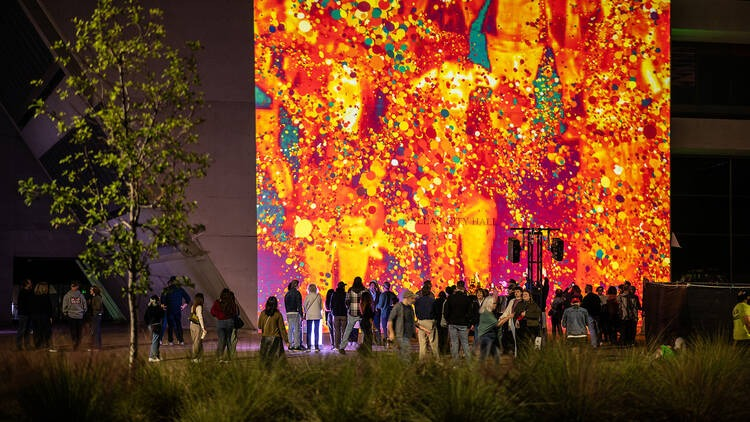

Tecnología y crítica social
El uso de tecnología en su trabajo no es neutral, sino que se vincula con una mirada crítica sobre temas contemporáneos. Sus obras abordan problemáticas como la vigilancia masiva, el control de datos y la exposición de la identidad en espacios públicos.A través de estas propuestas, invita a reflexionar sobre cómo las tecnologías afectan la vida cotidiana. La interacción se convierte en una herramienta para visibilizar estas tensiones y cuestionar su impacto en la sociedad.

Espacio público y experiencia colectiva
Muchas de sus instalaciones se desarrollan en espacios urbanos, lo que permite ampliar el alcance del arte más allá de los ámbitos tradicionales. Estas intervenciones transforman el paisaje cotidiano en un entorno de experimentación.El carácter colectivo de estas obras genera experiencias compartidas entre desconocidos, promoviendo nuevas formas de interacción social. El espacio público se convierte así en un lugar de encuentro donde arte, tecnología y comunidad se entrelazan.
